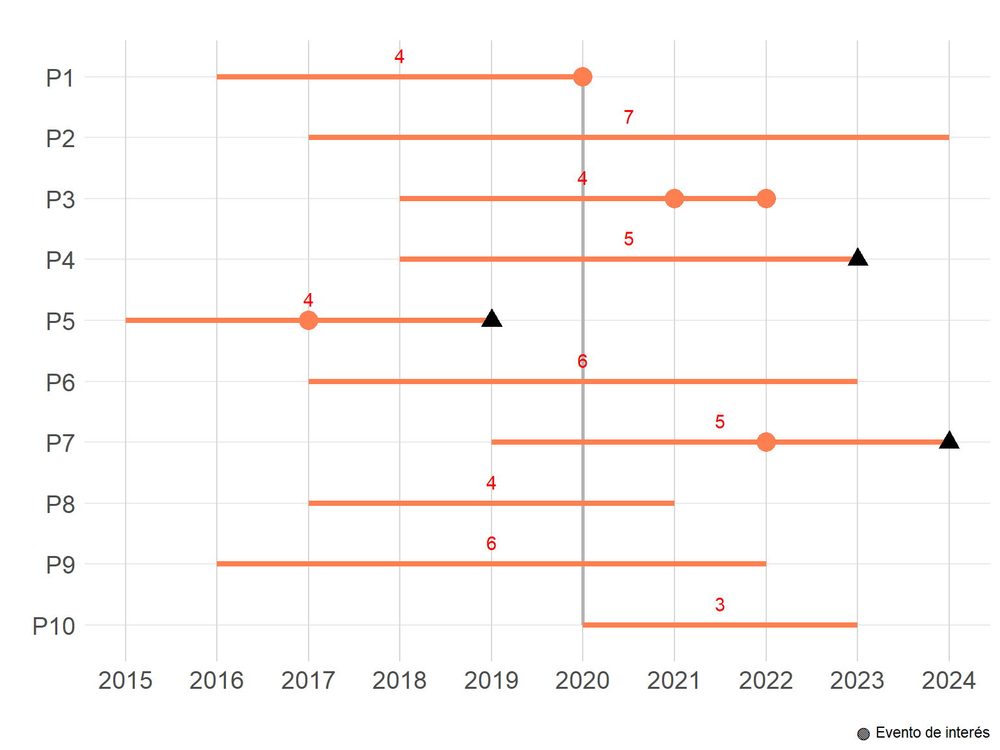
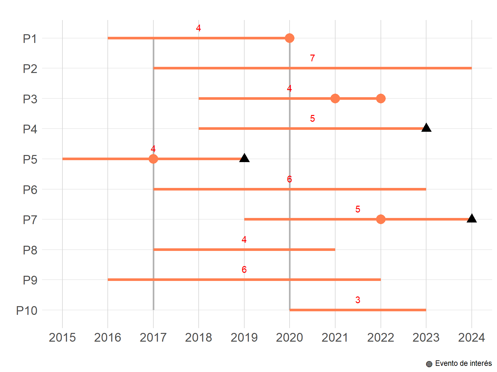
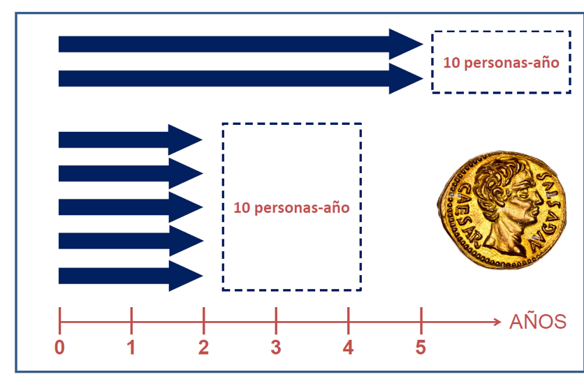
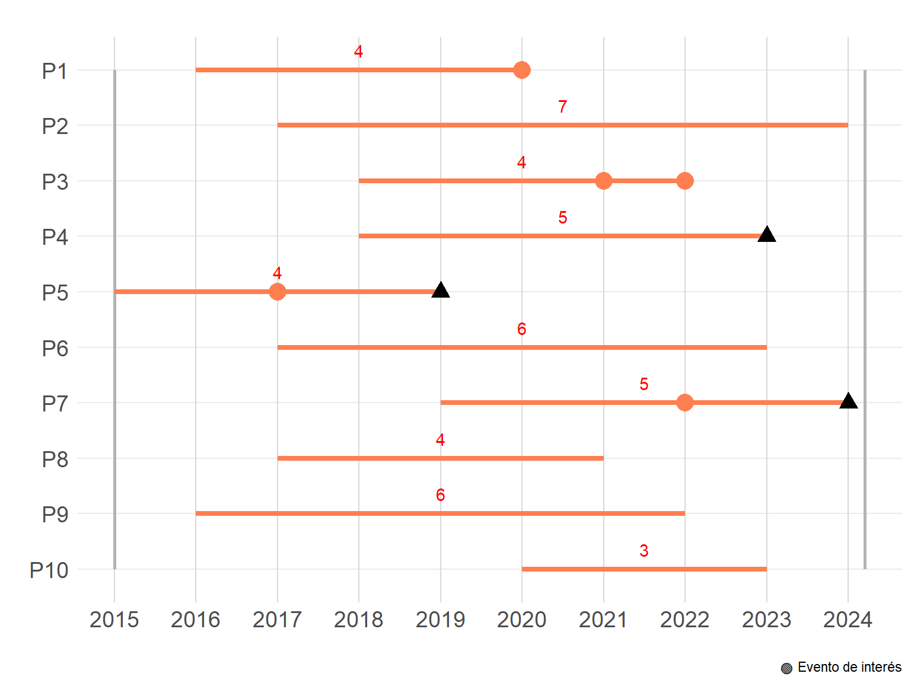

7 Medidas de Frecuencia
¡Recuerda!
Proporción: Es una medida en la que el numerador está incluido dentro del denominador. Se expresa como un valor entre 0 y 1 o como un porcentaje. Ejemplo: La prevalencia de hipertensión en una comunidad durante el 2020 fue del 20%.
Razón: Es una comparación entre dos cantidades que pueden o no estar relacionadas. A diferencia de la proporción, el numerador no necesariamente está contenido en el denominador. Ejemplo: La razón de sexos en una población es de 2 hombres por cada mujer.
7.1 Prevalencia
Definición: Proporción de individuos en una población que tienen una enfermedad en un momento dado.
¡Importante!
Debes tener en cuenta que cuando decimos en un tiempo dado, siempre nos referiremos a un periodo de tiempo ya que es imposible obtener datos de muchas personas en el mismo microsegundo.
Aunque en los libros se distinguen dos tipos de prevalencia (prevalencia puntual vs prevalencia de periodo) en la práctica solo nos refermos como prevalencia, ya que, decir la prevalencia anual (prevalencia puntual) podría ser equivalente a la prevalencia en 12 meses, o en 365 días (prevelencia de periodo).
Fórmula:
\(Prevalencia = \frac{\begin{array}{c} \text{Casos de una enfermedad presentes en la } \\ \text{población enun momento dado}\end{array}}{\begin{array}{c} \text{Número de personas en la población } \\ \text{en ese momento dado}\end{array}} \times 100\)
Ejemplo:
¿Cuál fue la prevalencia de infarto agudo de miocardio en la población adulta mayor de Marte (astronautas) en 2020?
OJO: Las lineas rojas solo muestran el tiempo de seguimiento desde que empezaron a fumar más de 10 cajetillas al día hasta que dejaron de hacerlo o fallecieron. El circulo rojo significa que presento el infarto en ese año, y el triangulo que falleció.
Para la prevalencia, solo nos interesa el número de personas que presentaron el evento (n=1) del total de la población en ese momento (n=9).
Por lo que, la prevalencia de infarto agudo de miocardio en la población adulta mayor de marte durante 2020 sería igual a 0.111 o 11.1%.
7.2 Incidencia Acumulada
Definición: Proporción de individuos inicialmente sanos que desarrollan una enfermedad durante un periodo.
Fórmula:
\(Incidencia acumulada = \frac{\begin{array}{c} \text{Númeor de casos de una población en riesgo que} \\ \text{desarrollaron el evento en un período de seguimiento}\end{array}}{\begin{array}{c} \text{Número de personas en la población de riesgo } \\ \text{de desarrollar el evento de interes al inicio}\end{array}} \times 100\)
Ejemplo:
¿Cuál sería la incidencia de un primer evento de infarto agudo de miocardio en la población adulta mayor de Marte (astronautas) si el estudio iniciaría en 2017 y acabara en 2020?

OJO: Las lineas rojas solo muestran el tiempo de seguimiento desde que empezaron a fumar más de 10 cajetillas al día hasta que dejaron de hacerlo o fallecieron. El circulo rojo significa que presento el infarto en ese año, y el triangulo que falleció.
Para la incidencia, nos interesa el número de personas que desarrollaron el evento (n=1) del total de la población que se encontraba en riesgo al inicio del seguimiento de desarrollar un infarto de miocardio (los 10 sujetos estan en riesgo de presentar un infarto, independientemente de si empezaron a fumar o no, excepto P5 que ya presento su primer evento de miocardio al inicio del seguimiento - 2017, n=9).
Por lo que, la incidencia de un primer evento de infarto agudo de miocardio en la población adulta mayor de marte entre 2017 y 2020 fue 11.1%.
7.3 Tasa de Incidencia o tasa
Definición: Es una medida que describe la velocidad de ocurrencia de un evento en una población a lo largo del tiempo. Incluye un componente de tiempo en el denominador. Ejemplo: La tasa de incidencia de cáncer de pulmón es de 50 casos por 100,000 personas-año de seguimiento.
Fórmula:
\(\text{Tasa de incidencia} = \frac{\text{Casos nuevos}}{\text{Persona-tiempo en riesgo}}\)
 ::: callout-note ## ¡Atención!
La unidad de la tasa o densidad de incidencia es el de sujetos-tiempo, así puede ser personas-año, pacientes-meses, niños-días, etc
Como se puede observar en la imagen, 1 persona-año de seguimiento se refiere a que se siguió durante 1 año a un persona, 2 persona-año puede equivaler a que se siguió durante 2 años a 1 persona o que se siguió durante 1 año a 2 personas.
Recuerda que el denominador en incidencia son las personas en riesgo, por lo que no pueden ser parte del denominador personas que ya tienen la enfermedad. :::
Ejemplo:
¿Cuál sería la velocidad de aparición (tasa de incidencia) de un primer evento de infarto agudo de miocardio en la población adulta mayor de Marte (astronautas) tras la exposición con su atmosfera?
Nota: Las lineas rojas solo muestran el tiempo de seguimiento desde que entraron en contacto con el aire de Marte hasta que dejaron de estar expuestos o fallecieron. El circulo rojo significa que presento el infarto en ese año, y el triangulo que falleció.

El sujeto 1 aporta 4 años de seguimiento = 4 persona-año de seguimiento
El sujeto 2 aporta 7 persona-año de seguimiento
El sujeto 3 aporta 3 persona-año de seguimiento (el ultimo año no cuenta porque ya presento el evento y ya no esta en riesgo de un primer episodio)
El sujeto 4 aporta 5 persona-año de seguimiento
El sujeto 5 aporta 2 pesona-año de seguimiento
Así si continuamos evaluando el número de persona año de seguimiento, tendremos que entre los 10 sujetos aportan 43 persona-año de seguimiento. Además observamos que durante todo el seguimiento 4 personas presentaron un primer episodio de infarto de miocardio.
Por tanto:
\(\frac{\text{4 eventos}}{\text{43 persona-año}} = \text{0.0930 eventos/ persona-año}\)
Así, podemos decir que por cada 100 persona-año de seguimiento apareceran 9.3 casos nuevos de infarto de miocardio entre los astronautas que se expongan al aire de marte.
7.4 Referencias
- Zafra-Tanaka JH, Taype-Rondan A, Fernandez-Guzman D. Cómo entender las medidas de efecto en la investigación clínica: Interpretación práctica y aplicación. Revista del Cuerpo Medico Hospital Nacional Almanzor Aguinaga Asenjo. 2023;16. Disponible en: https://cmhnaaa.org.pe/ojs/index.php/rcmhnaaa/article/view/1935
7.5 Disclaimer
- Esta sección fue editada usando ChatGPT.